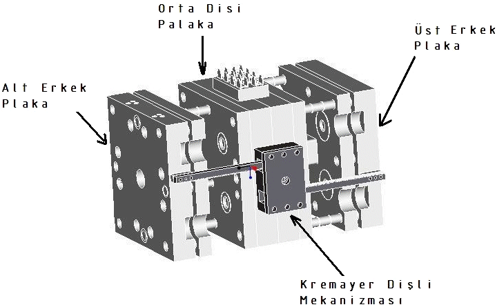
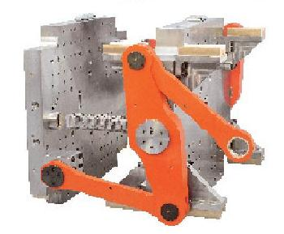
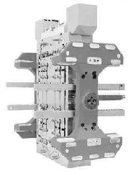

|
Mustafa Kurt, M.Ü. Teknik Eðitim Fakültesi
Ömer Þaban Kamber, Ýhlas Ev Aletleri A.Þ.
Oðuz Girit, M.Ü. Teknik Eðitim Fakültesi
Ekim 2005, Ýstanbul
Not: Ýlk defa TurkCADCAM.net Dergisi 1. sayýsýnda (Ocak-Þubat 2006) yer alan bu makale, Ekim 2008'de TurkCADCAM.net Portalý'nda yayýnlanmaya baþlamýþtýr.
Günümüzde birçok sektörde; baþta ev aletleri, ilaç sanayi, otomotiv, silah ve uçak sanayi sektörlerinde plastikler oldukça sýk bir þekilde kullanýlmaya baþlanmýþtýr. Metal olarak kullanýlan birçok parça; üretim kolaylýðý, hýz ve maliyet yönünden büyük avantajlar saðladýðý için artýk plastik malzemelerden üretilmektedir. Ýlerleyen teknoloji sayesinde birçok özelliklere sahip olan bir ürünün üretilmesinde iki ana faktör, plastikler malzemelerin özellikleri ve bu plastiklere þekil verecek olan plastik kalýplar önemli rol oynamaktadýr.
Plastik kalýp tasarýmý ve imalatý açýsýndan rekabetin içerisinde olabilmek için, geliþen plastik teknolojisi göz önünde bulundurularak, deðiþen kullaným yerlerine uygun, daha hýzlý, daha kaliteli ve daha ucuz maliyetli kalýplar yapmak zorunluluðu bulunmaktadýr. Bu sebeple kalýp sektöründeki dünyadaki gerek akademik ve gerekse uygulama ile ilgili her türlü geliþmeyi takip etmek gerekir.
Bu çalýþmada, ülkemizde tasarýmý ve imalatý yaygýn olarak yapýlmayan dünyada ilk uygulamalarý 1963 yýllarýnda olan ve stack mold adý verilen ardýþýk kalýp sistemleri ve ülkemiz kalýp sektörü için önemi incelenecektir.
1. Giriþ
Birden fazla kalýbýn arka arkaya eklenmesiyle birkaç kalýbýn iþlevini gören ve tek bir enjeksiyon makinesiyle çalýþan daha verimli ve üretim kapasitesi daha yüksek kalýp sistemlerine Stack kalýp sistemleri denir. Bu sistemde 2, 3 veya 4 kalýp arka arkaya eklenebilir. Stack kalýplarýn dünya'daki ilk uygulamalarý 1963 senesinde olmuþtur. Caco Pacific Corporation adlý þirket 1963 senesinde sýcak yolluklu sistem ile çalýþan stack kalýp imal etmiþtir [11]. Stack kalýplar tek yüzeyli kalýplara nazaran imalatý daha kolay hale getirebilen bir kalýp tasarým þeklidir. Bir defada daha çok parçayý mevcut enjeksiyon makinesini kullanarak basabilen bu kalýp sistemi yüksek üretim hacimli parçalar için oldukça idealdir.
Tek yüzeyli standart kalýplarda göz adedini arttýrmak veya büyük, derin parça basmak yüksek kapasiteli enjeksiyon makinesi gerektirecektir. Fakat stack kalýpta gözleri arka arkaya getirilerek iki boþluklu stack kalýp ayný makinede tek boþluklu makine gibi çalýþabilir.
Stack kalýbýn en basit þekli 2 yüzeyli stack kalýp denilen sistemdir. Bu sistemin çalýþma prensibi iki kalýbýn arka arkaya eklenmesi suretiyle 2 yüzeyli bir kalýp elde edilmesi þeklindedir. Bu sistemde erimiþ plastik orta plakaya eklenmiþ ana manifolda, uzatýlmýþ bir meme çubuðuyla enjekte edilir. Manifold her iki yüzeyin gözlerini eþit zamanlý olarak besler.
Stack kalýpta eriyik orta plakadaki birincil manifolda enjekte edilir ve oradan da diðer sabit plakalarýn çekirdeklerine transfer edilir. Erimiþ plastik orta plakaya geçtiði zaman ana sýcak yolluk manifoldu içindeki VMTS her iki tarafý da eþ zamanlý olarak besler. Stack kalýp düzenlemesi diðer tek boþluklu kalýplara göre kalýpçýlar için önemli bir avantaj saðlar. Bu sistemle ürün çýktý adedi iki katýna çýkartýlabilir. Kalýp göz boþluðunu arttýrýp da daha büyük bir enjeksiyon makinesine ihtiyaç duymadan bu iþlem gerçekleþtirilebilir [2].
2. Stack kalýp çeþitleri
2.1. Ýki yüzeyli kalýplar
Ayný enjeksiyon makinesinde normal kalýba göre göz adedini 2'ye katlayarak 2 kat parçanýn üretilmesini saðlar.
Ýki yüzeyli bir stack kalýp her iki tarafý iþlenmiþ bir orta plaka ve normal kalýplarda olduðu gibi tek taraflarý iþlenmiþ plakalardan oluþur. Stack kalýpta erimiþ plastik bir meme çubuðu veya VMTS denilen vanasýz eriyik transfer sistemi ile orta plakaya iletilir ve oradan da diðer plakalara transfer edilir [2,15].

Þekil 1. Ýki Yüzeyli Stack Kalýp
Ýki yüzeyli stack kalýplarýn avantajlarý:
- Her bir enjeksiyon makinesinin verimliliðini arttýrýr.
- Böylece ayný üretim kapasitesinde gerekli olacak enjeksiyon makinesinin sayýsýný azaltýr.
- Normal kalýpla stack kalýp kýyaslandýðýnda ayný göz sayýsý için kullanýlacak enjeksiyon makinesinin tonajý daha düþük olabilir.
- Ölçü stabilizesi saðlar.
- Her bir göz kendi baþýna münferiden kumanda edilebilir.
- Her bir parça sýcak yollukla kumanda edildiði için daha kaliteli bir ürün üretilmesini saðlar.
- Firenin daha az olmasýný saðlayarak malzemeden kar ettirir.
- Bütün gözlerin tüm özellikleri ayný olarak imalat yapýlabilir.
Uygulama Alanlarý:
- Seri olarak imalatý çok yüksek miktarlarda istenen parçalarda (min. 1milyon/ay)
- Ýnce cidarlý ambalaj ürünleri
- Endüstriyel paketleme
- Yedek parça
- Çatal-býçak-kaþýk seti
- Týbbi/Eczacýlýk
- Kapaklar
Fazla derin olmayan parçalarýn seri olarak basýlmasýna olanak saðlayan stack kalýp sistemleriyle yýlda yüz milyonlarý bulabilecek baský sayýsýna ulaþýlabilir.
2 yüzeyli stack kalýpta orta plakanýn hareketinin saðlanabilmesi için günümüzde 3 belli baþlý sistem vardýr. Bunlar harmonik kol, kramayer diþli ve helisel diþli mekanizmalarýdýr.
 |
 |
Þekil 2. Harmonik Kol |
Þekil 3. Kramayer Diþli Mekanizmasý |
|